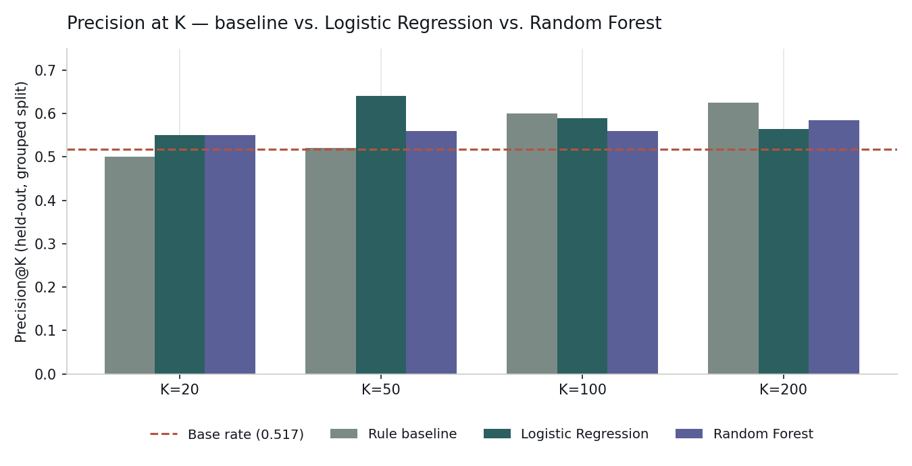
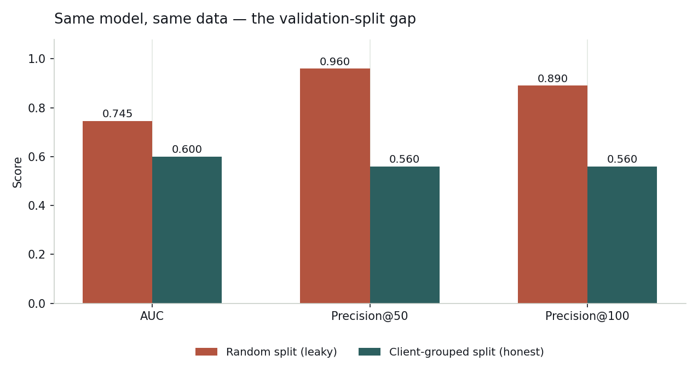
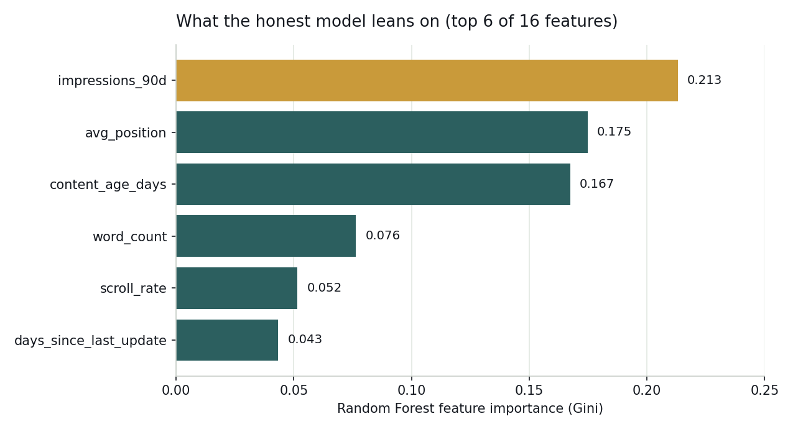
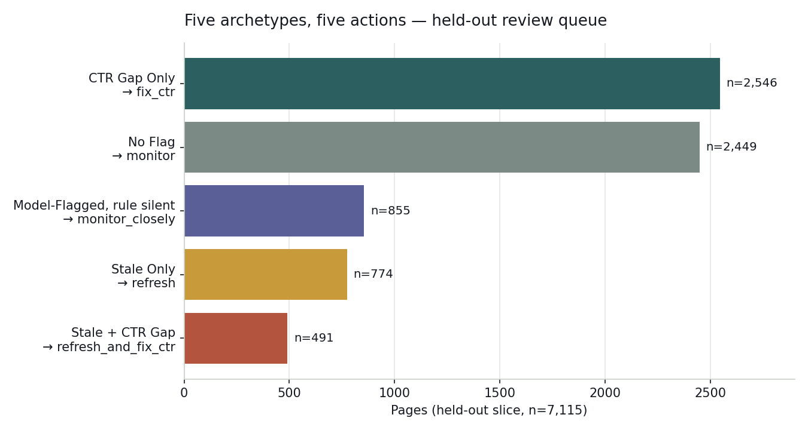

A transparent baseline rule vs. a learned model, scored on the same held-out pages, under a validation split honest enough to survive a leakage audit.
Which underperforming pages should a content team review first — and can a learned model actually beat a simple, readable rule at that job? Using a 30,000-row anonymized slice of FlyRank's 90-day search-content warehouse (32 pseudonymized clients), I built a transparent baseline (visibility + staleness + position-adjusted CTR gap) and compared it against Logistic Regression and Random Forest classifiers predicting 30-day traffic decline, scored on identical client-grouped, zero-overlap splits. The honest result is mixed and modest: Logistic Regression beats the baseline at tight top-K review sizes (precision@50 of 0.64 vs. 0.52), the baseline wins at looser ones (precision@100 of 0.60 vs. 0.59), and a deliberately re-run "leaky" random split shows how easily this same model could have looked far stronger than it is (AUC 0.745 vs. the honest 0.600) if client identity were allowed to leak across the split. The output is a blended, reason-coded review queue meant as decision-support for a content strategist, not an autonomous refresh trigger.
A content team maintaining thousands of pages can't review all of them every week. Someone has to decide which pages get looked at first: which ones are quietly losing search traffic, and why. Get the ranking wrong and a team either wastes hours on pages that were fine, or lets a real decline sit untouched for another review cycle.
The obvious first move is a rule a human can read: flag anything visible-but-stale, or visible-and-underperforming its own position tier. That rule is this paper's baseline. The question the capstone asks is whether a learned model, given the same starter features, earns a place ahead of that rule — and whether it can survive being checked for the two failure modes that quietly inflate almost every naive result: data leakage and an unfair validation split.
The working table is content_refresh_anonymized.csv from the FlyRank ML
Internship starter release: 30,000 rows, one per content page, aggregated
over a trailing 90-day window, across 32 pseudonymized clients
(client_id) and pseudonymous page IDs (content_id) used strictly
for grouped splitting, never as model features.
The label, is_declining_label, is derived as trend_direction == "down"
— a comparison of the most recent 30 days against the prior 30. Base rate across the full
table is close to even (roughly 0.52), which matters: a bare precision number means little
without that base rate sitting next to it.
trend_direction, trend_pct)
— excluded from every feature set, on both the baseline and the model, since they are
arithmetically close to the target itself.provider_used,
model_used) — decision-adjacent, not predictive signal, and never used as
features.
A page enters the review queue if it has real visibility (impressions_90d ≥ 300)
and either (a) it's gone stale (91+ days since last update), or (b) it ranks
decently but its CTR sits below the median CTR for its own position tier — an
apples-to-apples underperformance flag rather than a re-statement of bad position. This
rule alone routed 9,894 of 30,000 pages into three reason codes:
stale_but_visible, ctr_gap_for_position, and
stale_and_ctr_gap.
13 numeric features (impressions_90d, clicks_90d,
sessions_90d, engagement_rate, scroll_rate,
ai_traffic_pct, avg_position, ctr,
word_count, content_age_days, days_since_last_update,
search_volume, competition) plus 3 categorical
(content_type, main_intent, competition_level).
Logistic Regression was tried first for readability, Random Forest second for a
stronger-but-still-honest comparison; Gradient Boosting was skipped — with a base rate near
50% and this feature set, added complexity wasn't earning its keep.
Splitting rows at random lets a model see other pages from the same client in training —
effectively memorizing a client's typical CTR or content style rather than learning a
generalizable decline signal. The data dictionary flags client_id as existing
specifically for grouped splits, so every reported "honest" number below uses a 75/25
client-grouped split, verified to have zero client overlap between train
and test.
Why this is checked, not assumed: a same-model comparison was re-run under a plain random split to see the size of the gap. Random split shared 31 clients between train and test; the grouped split shares zero by construction. The difference in resulting scores is the subject of the Results section below — it's the paper's most important finding, not a footnote.
Beyond excluding label-derived columns by design, the exclusion was verified in code, and
the audit's own sensitivity was tested by deliberately re-adding a label-derived feature
(trend_pct — the exact number the label is computed from) to see whether the
test harness would catch it:
| Feature set | AUC (grouped split) |
|---|---|
| Honest final features (16, no label-derived columns) | 0.600 |
Same features + trend_pct injected on purpose | 1.000 |
The jump to a perfect 1.000 the moment a label-derived column is added is the textbook confession signal — confirming both that the harness genuinely detects leakage, and that the real feature set is clean.

| K | Baseline | Logistic Reg. | Random Forest | Base rate |
|---|---|---|---|---|
| 20 | 0.500 | 0.550 | 0.550 | 0.517 |
| 50 | 0.520 | 0.640 | 0.560 | 0.517 |
| 100 | 0.600 | 0.590 | 0.560 | 0.517 |
| 200 | 0.625 | 0.565 | 0.585 | 0.517 |
AUC for both learned models sits close to chance: Logistic Regression 0.542, Random Forest 0.600 — a real but modest signal, not a strong one. Random Forest, despite being the "stronger" step in the modeling ladder, does not beat Logistic Regression here: added model complexity isn't earning its keep on this feature set.

A random-style split shared 31 clients between train and test; a grouped split shares zero. The gap between the two is the finding: a naive validation approach here would have produced a dramatically overstated claim, for reasons that have nothing to do with real predictive skill.

Of the top 100 Random-Forest-ranked pages on the held-out set, the observed decline rate is 56% against a 51.7% base rate — a real lift, and also a reminder that 44 of those top 100 did not, in fact, decline.
All language above and throughout uses careful framing: observed, measured, directional, decision-support — never causal, never "predicts Google's algorithm," never client-identifying.
The deployed queue blends the two signals — 50% normalized rule score, 50% honest (grouped-split, held-out) model probability — so a human reviewer always has a transparent "why," with the model contributing only the small, directional lift Results actually measured. Scored strictly on the 7,115-row held-out slice the model never trained on:

Highest-priority tier — both flags fire at once. Review first; these are the pages where staleness and an underperforming CTR-for-position compound.
Visible and stale, but CTR is holding up for its position tier — a content-freshness pass, not a CTR investigation.
The rule sees nothing wrong, but the honest model's probability crosses 0.65 anyway — worth a second look, not an automatic queue entry on its own.
Ranking is fine; the click-through rate for that position tier is not. Check title, meta description, and SERP feature competition before touching the content itself.
No action recommended this cycle — the largest group, and deliberately so.
No-go floor: 3,575 of 7,115 held-out pages sit below the 300-impression visibility floor and should never receive an automated action regardless of score, low-traffic pages produce noisy trend signal by construction.
Base-rate drift of more than ~10 points on a fresh export means the model's calibration should be treated as stale until re-validated. A fresh, labeled spot-check sample showing precision@50 meaningfully below the 0.56 grouped-split number (checked across at least two review cycles, not one bad batch) is a retrain signal.
Every number above traces back to a committed notebook, run top to bottom from a fresh clone:
work/notebooks/w04_baseline_score.ipynb — the rule, its two signal checks, top-10 review, leakage checkwork/notebooks/w05_model.ipynb — feature set, grouped split, Logistic Regression vs. Random Forest vs. baseline tablework/notebooks/w06_validation_audit.ipynb — the random-vs-grouped validation gap, the injected-leakage confessionwork/notebooks/w07_action_playbook.ipynb — the blended queue, archetype mapping, exported metricsRandom seed 42 throughout (GroupShuffleSplit(random_state=42)).
Repo: github.com/moriyamao/flyrank-ml-internship.
Metrics behind every chart on this page are committed at
work/outputs/playbook_metrics.json.